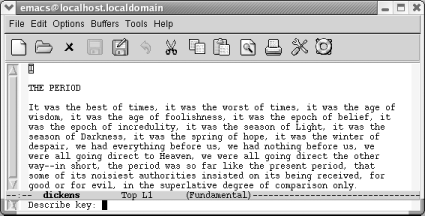
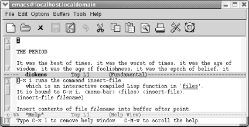

Emacs拥有详细的联机帮助，在第14章会有更详细的介绍。可以按工具栏的救生 圈图标或者帮助菜单来显示帮助菜单，在本节的后面会介绍他们。用键盘获取帮 助，请按 C-h 。按 C-h ? 显示帮助选项列表。
要获得快捷键的信息，按 C-h k 。例如：按 C-h k C-x i , Emacs 显示插入文 件指令(快捷键： C-x i )的描述信息.按 C-h f (函数描述信息)让Emacs显示函 数的描述信息（只是一个命令名称，如 find-file ).本质上， C-h k 和 C-h f 显示相同的信息；不同的是使用 C-h k ,你需要按快捷键，而用 C-h f 时，你需 要输入指令名称。
假设你想知道C-x i的功能。
| 输入：C-h k |
|  |
| 获取一个键盘指令的帮助。 |
| 输入：C-x i |
|  |
| Emacs分屏显示帮助信息。 |
需要注意的是：因为在查看不同的缓冲区，窗口被分成两个区域。每个缓冲区者 有其自己的模式行。下部是帮助缓冲区，显示插入文件指令的描述信息。光标还 停留在“狄更斯”缓冲区，因为你没有理由来编辑“Help”缓冲区。
你或许注意到这个指令的描述文档中，Emacs将光标称为point.贯穿Emacs始终都 是这样称呼光标的，你肯定会遇到的。
要关闭 Help 缓冲区，按 C-x 1 （我们在第四章介绍）
1.10.1 帮助菜单
可以通过帮助菜单快速访问指令的帮助，菜单栏的帮助按钮或者工具栏的救生圈 图标都可以打开帮助菜单。在帮助菜单里，可以找到我们刚才讨论的选项：Emacs快 速指南，Describe里的按键帮助（Describe Key），以及Describe里的功能帮助 （Describe Function）。菜单中还包含很多有趣的选项包括访问Emacs 常见问题 （FAQ）文档，一个新的查询功能，以及一个Emacs的精神病医生（你或许可以这 样告诉它：Emacs今天让我很抓狂）。Emacs有一个接口Info—Emacs的在线帮助文 档。选择阅读Emacs帮助手册就可以启动Info。
这节，我们简要介绍了可以获得帮助的方式。还有更多的帮助功能在第14章有详 细的介绍。我们介绍的帮助功能已经足够你开始使用Emacs了，如果你想了解更 多内容，可以直接跳到第14章。